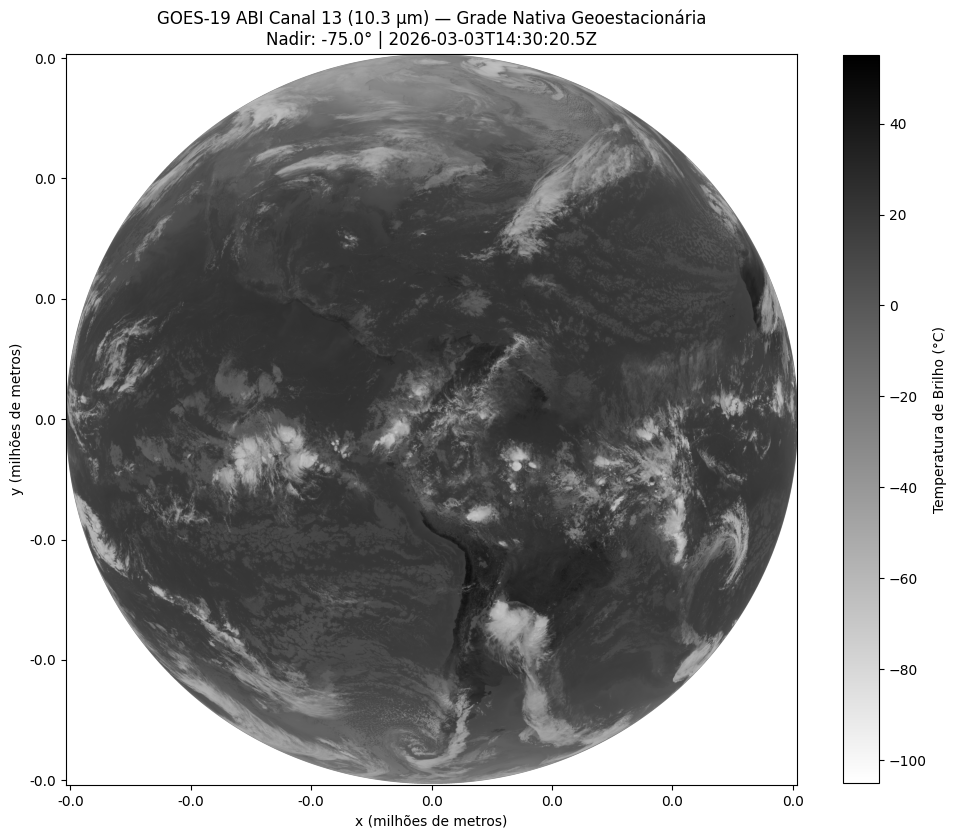
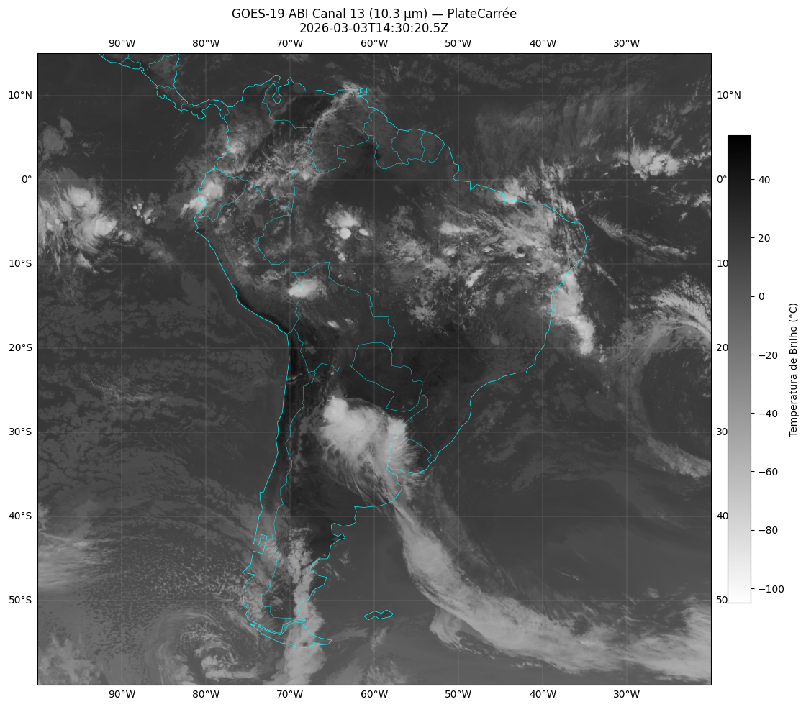
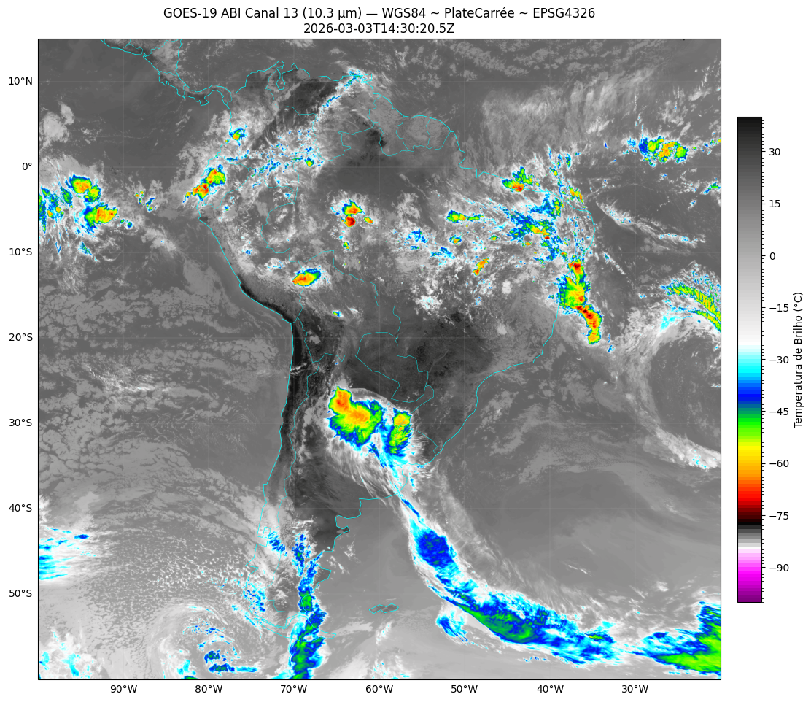
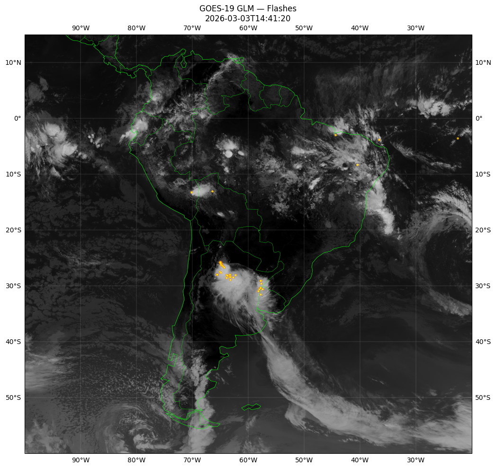
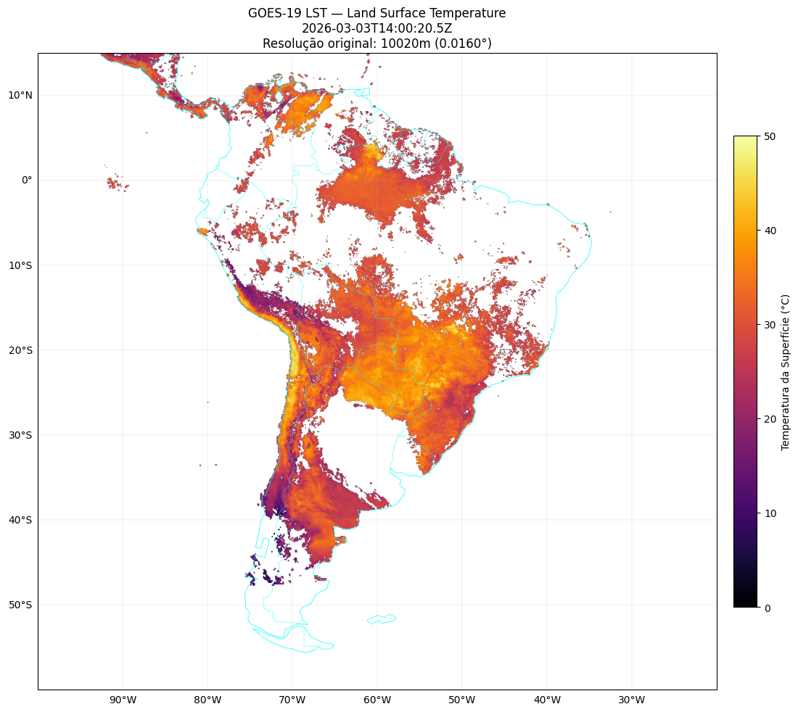

Aula prática 4c — dados do satélite GOES-19 (ABI, GLM e LST)
Esta aula introduz o processamento de dados brutos do satélite meteorológico GOES-19:
abrir o arquivo NetCDF do canal IR 13 (10,3 µm) na grade geoestacionária nativa;
converter radiância em temperatura de brilho (°C) usando os coeficientes de Planck embutidos no próprio arquivo;
reprojetar para WGS84 (lat/lon) com
pyprojescipy.ndimage.map_coordinates;sobrepor a malha de raios detectada pelo GLM (Geostationary Lightning Mapper);
abrir o produto LST (Land Surface Temperature) com sua máscara de qualidade (DQF).
Objetivo
Construir um pequeno pipeline de processamento de satélite que serve para validar visualmente eventos de granizo, raios e ondas de calor/frio observados em COPs.
Pré-requisitos
pip install xarray netcdf4 pyproj scipy cartopy boto3
Listagem dos arquivos via AWS open data
Os dados do GOES-19 são distribuídos por NOAA no S3 da AWS sem autenticação (acesso unsigned):
import boto3
from botocore import UNSIGNED
from botocore.config import Config
from datetime import datetime, timedelta, timezone
now = datetime.now(timezone.utc)
dt = now - timedelta(minutes=30)
prefix = f'ABI-L1b-RadF/{dt.year}/{dt.timetuple().tm_yday:03d}/{dt.hour:02d}/'
print(f'Buscando: {prefix}')
s3 = boto3.client('s3', config=Config(signature_version=UNSIGNED))
resp = s3.list_objects_v2(Bucket='noaa-goes19', Prefix=prefix)
Parte 1 — leitura do dado original
import xarray as xr
import numpy as np
import glob
files = glob.glob('goes19/OR_ABI-L1b-RadF-M6C13_G19*.nc')
latest = files[-1]
ds = xr.open_dataset(latest)
Entendendo a grade geoestacionária
Os eixos x e y do arquivo estão em radianos de varredura
do satélite (não em metros nem em graus):
proj_info = ds['goes_imager_projection']
h = proj_info.attrs['perspective_point_height']
lon_0 = proj_info.attrs['longitude_of_projection_origin']
sweep = proj_info.attrs['sweep_angle_axis']
a = proj_info.attrs['semi_major_axis']
b = proj_info.attrs['semi_minor_axis']
Saída típica:
Altura do satélite: 35786 km
Longitude nadir: -75.0°
Sweep axis: x
Semi-eixo maior (a): 6378137.000 m
Radiância → temperatura de brilho
Cada arquivo traz quatro constantes de Planck (planck_fk1,
planck_fk2, planck_bc1, planck_bc2) já calibradas para o
canal e o sensor. A conversão segue o ATBD da NOAA:
fk1, fk2 = ds['planck_fk1'].values, ds['planck_fk2'].values
bc1, bc2 = ds['planck_bc1'].values, ds['planck_bc2'].values
rad = ds['Rad'].values.astype(np.float32)
tb_k = (fk2 / np.log((fk1 / rad) + 1) - bc1) / bc2 # Kelvin
tb_c = tb_k - 273.15 # Celsius
Plot do dado na grade nativa

Figura 25 - Temperatura de brilho do canal IR 13 (10,3 µm) projetada na grade geoestacionária nativa do GOES-19. O disco terrestre aparece como é visto pelo satélite a ~36.000 km de altitude.
Parte 2 — reprojeção para WGS84
A imagem nativa não está em projeção alguma — é só uma matriz de
pixels em x/y de varredura. Para sobrepor a um mapa
convencional precisamos reprojetar para WGS84:
Definição do CRS de origem
from pyproj import CRS, Transformer
goes_crs = CRS.from_cf({
'grid_mapping_name': 'geostationary',
'perspective_point_height': h,
'longitude_of_projection_origin': lon_0,
'sweep_angle_axis': sweep,
'semi_major_axis': a,
'semi_minor_axis': b,
})
Recorte da grade de destino (memória limitada)
Reprojetar o disco inteiro consome muita RAM. Definimos só a janela América do Sul + Atlântico:
res = 0.02 # ~ 2 km
lon_min, lon_max = -100.0, -20.0
lat_min, lat_max = -60.0, 15.0
dst_lon = np.arange(lon_min, lon_max, res)
dst_lat = np.arange(lat_max, lat_min, -res) # de norte para sul
Transformação lon/lat → x/y geoestacionário
transformer = Transformer.from_crs(
CRS.from_epsg(4326), goes_crs, always_xy=True,
)
lon_grid, lat_grid = np.meshgrid(dst_lon, dst_lat)
x_proj, y_proj = transformer.transform(lon_grid, lat_grid)
mask_valid = np.isfinite(x_proj) & np.isfinite(y_proj)
Pontos fora do disco terrestre retornam inf — mascaramos como
NaN.
Conversão para índices de pixel
O pyproj devolve metros; os eixos do arquivo estão em radianos.
Dividimos por h para voltar a radianos e interpolamos no array
nativo:
x_rad = ds['x'].values
y_rad = ds['y'].values
x_rad_proj = x_proj / h
y_rad_proj = y_proj / h
dx, dy = x_rad[1] - x_rad[0], y_rad[1] - y_rad[0]
col_idx = (x_rad_proj - x_rad[0]) / dx
row_idx = (y_rad_proj - y_rad[0]) / dy
Reamostragem com scipy.ndimage.map_coordinates
from scipy.ndimage import map_coordinates
row_safe = np.where(mask_valid, row_idx, 0).astype(np.float64)
col_safe = np.where(mask_valid, col_idx, 0).astype(np.float64)
tb_fill = np.where(np.isfinite(tb_c), tb_c, -999.0)
dst_data = map_coordinates(
tb_fill,
[row_safe.ravel(), col_safe.ravel()],
order=0, # 0 = nearest, 1 = bilinear
mode='constant', cval=-999.0,
).reshape(lon_grid.shape)
dst_data = np.where(mask_valid & (dst_data > -100), dst_data, np.nan)
Plot reprojetado com Cartopy

Figura 26 - Temperatura de brilho do canal 13 reprojetada para WGS84
(escala invertida gray_r).
Com a paleta padrão de cores frias do CPTEC para temperatura de brilho:

Figura 27 - Mesma imagem com a paleta CPTEC realçando topos de nuvens frias.
Parte 3 — raios com GLM (geostationary lightning mapper)
O segundo instrumento operacional do GOES-19 é o GLM, um detector óptico que registra clarões de raios:
files = glob.glob('goes19/OR_GLM-L2-LCFA_G19*.nc')
ds_glm = xr.open_dataset(files[-1])
flash_lat = ds_glm['flash_lat'].values
flash_lon = ds_glm['flash_lon'].values
Sobreposição das ocorrências aos topos de nuvens IR:

Figura 28 - Imagem IR (canal 13) com flashes do GLM sobrepostos em amarelo. Útil para identificar célula convectiva ativa associada a um episódio de granizo declarado.
Parte 4 — LST (land surface temperature)
O produto L2 LST entrega temperatura da superfície junto com uma
máscara de qualidade (DQF):
file_lst = glob.glob('goes19/OR_ABI-L2-LSTF-M6_*.nc')[-1]
ds_lst = xr.open_dataset(file_lst)
lst = ds_lst['LST'].values.astype(np.float32)
dqf = ds_lst['DQF'].values
# Apenas pixels com DQF == 0 (boa qualidade)
lst_q = np.where(dqf == 0, lst, np.nan)

Figura 29 - LST do GOES-19 após aplicação da máscara DQF == 0.
Plataformas alternativas
Trabalhar com o dado bruto do GOES é oneroso. Para quem só precisa “ver a imagem”, há plataformas web prontas:
SIGMA/CPTEC: https://sigma.cptec.inpe.br/
Acervo CPTEC: https://satelite.cptec.inpe.br/acervo/goes16.formulario.logic
SLIDER (CIRA): https://slider.cira.colostate.edu/?sat=goes-19
Discussão
Para análises de COPs do Proagro, o uso típico é a inspeção visual durante a janela do evento — confirmando se houve sistema convectivo, nebulosidade densa, frente fria, etc. O processamento bruto só é necessário quando precisamos exportar uma imagem georreferenciada para sobrepor à malha de glebas em GIS.
Próximos passos
Satélites meteorológicos — conceitos físicos de satélites geoestacionários, canais ABI, temperatura de brilho.
Tipos de eventos adversos no campo — eventos cujo diagnóstico se beneficia de satélite (granizo, raios, ondas de calor).